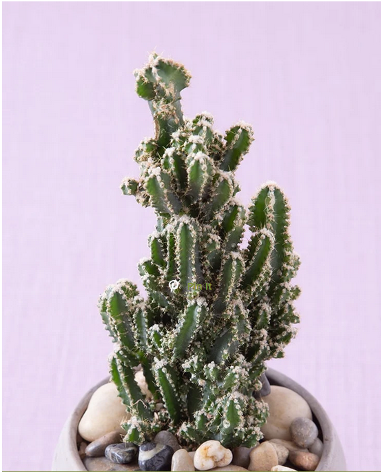
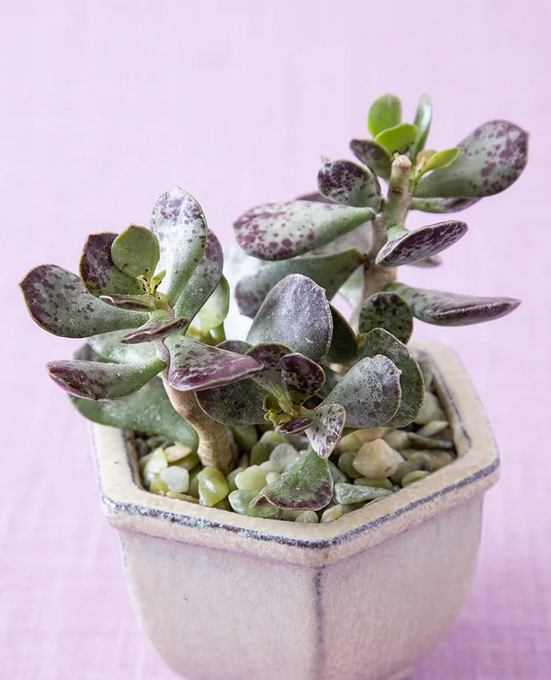
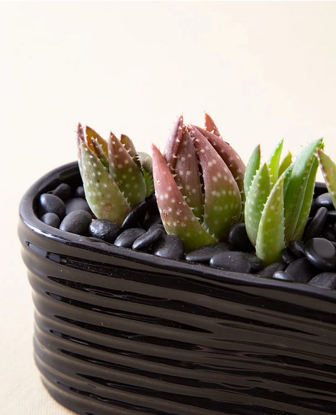

- Acanthocereus Tetragonus


- Adromischus Maculatus
- Aloe

features

features

features
Succulent Facts
Definition:
"In botany, succulent plants, also known as succulents, are plants with parts that are thickened, fleshy, and engorged, usually to retain water in arid climates or soil conditions."
Read about succulents on wikipedia